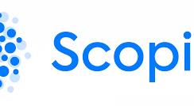
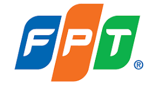

Objective
Solutions Architect with over 15 years of experience driving large-scale IT engineering, cloud architecture, and intelligent software delivery. Proven track record of leading cross-functional teams of up to 50+ engineers spanning AI development, cloud infrastructure, and DevOps. Specialist in designing and deploying production-grade Agentic AI systems (multi-agent orchestration, stateful workflows, tool integration) and implementing MLOps frameworks to automate model lifecycles, continuous evaluations, and operational reliability.
Key Highlights & Core Competencies
- AI Architecture & Agentic Workflows: Architected enterprise AI systems using multi-agent orchestration frameworks (e.g., LangGraph, AutoGen), tool-calling integrations, and context-aware RAG pipelines to automate complex multi-step processes.
- MLOps & LLMOps Infrastructure: Designed end-to-end MLOps pipelines covering automated model deployment, experiment tracking, continuous evaluation (evals), observability, and guardrails across cloud ecosystems.
- Engineering Leadership (50+ Engineers): Led and mentored multi-disciplinary engineering teams across Software Development, Cloud/DevOps, and AI/MLOps to establish operational excellence, architectural standards, and delivery frameworks.
- Cloud Infrastructure & DevOps (8+ Years): Built scalable, highly available cloud-native environments and CI/CD/CT (Continuous Training) pipelines optimized for high compute loads, GPU resource management, and cost efficiency.
- Software Engineering (7+ Years): Hands-on background spanning full-stack web platforms, mobile apps, low-level embedded systems, and integration layers for distributed microservices.
- Pre-Sales & Client Strategy: Partnered with executive stakeholders to analyze technical requirement feasibility, author winning technical proposals, and pitch modern AI/Cloud transformation roadmaps.
About
Solution architect with 15+ years of experience in IT engineering. "Work Smarter, Not Harder" is my motto. I like working with excellent people throughout the world and contributing to IT communities.
- 7+ years of experience in software development across embedded systems, mobile, and web applications.
- 8+ years of experience in cloud infrastructure and DevOps technology stacks. Proven track record of designing, implementing, and managing scalable and efficient cloud-based solutions to support organizational goals and objectives.
- Hands-on experience in technical writing: articles, presentations, books, software specs, and design documents.
- Led and mentored a team of 50+ engineers across Software Development, Cloud Infrastructure, and DevOps, driving architecture design, delivery excellence, and operational reliability.
- Good English communication skills internally with the team and externally with the client.
- Pre-sale support, leveraging technical expertise and industry knowledge to understand client requirements, propose solutions to clients, and drive successful sales outcomes.
Skills
Cloud Computing
- Proficiency in AWS, Azure, and GCP
CI/CD
- CICD Pipeline (Jenkins/Azure DevOps) — provisioning scalable Jenkins from scratch, pipelines in Groovy
- CD GitOps (Spinnaker/ArgoCD) to deploy applications to K8s
MLOps
- End-to-end ML lifecycle: training, evaluation, deployment, monitoring
- Automated deployment, scaling, monitoring of ML models
- Model performance monitoring, logging, automated retraining pipelines
Generative AI
- Multi-agent systems and agentic workflows with Claude Agent SDK
- Self-hosting LLMs and GPU-accelerated inference (LiteLLM, Open WebUI, vLLM)
- RAG pipelines, prompt engineering, and LLM observability/cost tracking
Container Orchestration
- Kubernetes (AKS/EKS/GKE) — 4 years managing containerized apps, cluster deployment and scaling
- AWS ECS — hands-on deploying microservices to ECS cluster
- 7+ years with Docker / containerization
Observability
- 4 years implementing/deploying Datadog and Splunk on K8s and VM (Helm, Saltstack)
- Monitoring with CloudWatch, Azure Monitor, Stackdriver, Prometheus, Grafana
- Logging solutions with Splunk, Logstash, Redis, Elasticsearch
Infra as Code
- 5+ years automating infrastructure with Terraform and Terragrunt; IaC security with Aqua and Snyk
Programming
- 4 years Python for DevOps development, scripting in Bash/PowerShell
Linux Administration
- 2 years managing CentOS and Ubuntu systems
Foreign Languages
- English — good speaking, writing, reading
- Japanese — basic
Work Experience

IT Manager — Scopic Inc. (Remote) 11/2023 – 7/2026AWS Infrastructure & Cost Optimization
- Re-architected multi-region AWS environments to reach 99.99% uptime while optimizing resource efficiency to cut annual cloud spend by 25%.
MLOps & Production AI Hosting
- Built end-to-end production pipelines for self-hosted LLMs and GPU microservices — reducing inference latency by 35% and slashing deployment cycles from weeks to hours.
DevOps & Agentic AI Workflows
- Spearheaded internal Agentic AI workflows (automated code reviews and test generation) across a 50+ engineer team, increasing overall sprint velocity by 30%+.

Solution Architect — FPT Software Corp 5/2015 – NowAgentic AI & SDLC Automation
- Spearheaded production-grade Agentic AI workflows and custom AI coding assistants to automate core SDLC phases, significantly accelerating engineering throughput.
Cloud Architecture & MLOps Strategy
- Designed scalable multi-cloud infrastructure (AWS, Azure, GCP) and automated CI/CD/CT pipelines tailored for heavy compute workloads and GPU resource management.
Technical Advisory & Pre-Sales Leadership
- Conducted executive technical discovery, authored winning enterprise proposals, and pitched AI/Cloud transformation roadmaps that secured key enterprise accounts.
Key Recognition & Awards
- FPT Outstanding Technologist & FSOFT Top 100 — honored among top company-wide technical leaders for engineering innovation.
- FPT Software Star Award — recognized for driving high-impact technical initiatives, client growth, and leadership across global enterprise deliveries.
Technical Leader — Panasonic R&D Center
5/2007 – 5/2015- Technical Leadership: Directed complex engineering projects from design to deployment, serving as the primary technical authority for core systems.
- Embedded & Software Engineering: Engineered high-reliability software applications and led rigorous code reviews against strict technical specifications.
- Advanced R&D: Optimized image processing algorithms and microprocessor architectures for resource-constrained hardware devices.
- Architecture & Governance: Defined technical design standards and resolved critical system bottlenecks across cross-functional teams.
- Mentorship & Team Development: Coached junior software engineers, accelerating onboarding and driving team-wide adherence to engineering best practices.
- Key Achievement: PRDCV Award — honored with the Panasonic R&D Center Vietnam Award for exceptional technical excellence, engineering innovation, and high-impact contributions to R&D deliveries.
Education
Machine Learning Trainee — Coursera
1/2017 – 6/2017Online learning platform offering courses, specializations, and degree programs across a wide range of subjects.
Bachelor of Electronic Engineering — Hanoi University of Technology (HUST)
5/2001 – 6/2006One of the oldest and most prestigious technical universities in Vietnam, established 1956. Strong emphasis on engineering, technology, and applied sciences.
Honors & Awards
| 2025 | FPT Software Star Award |
| 2020 | FPT Potato Tech Mag magazine's best contributor |
| 2019 | FPT Outstanding Technologist |
| 2018 | FPT Software TOP 100 Best Performers |
| 2015 | FPT Certificate of Excellent |
| 2014 | PANASONIC Award |
Certifications
| 5/2024 | Google Professional Cloud Architect |
| 4/2024 | Microsoft Certified: Azure Design and Implement Solution (AZ-305) |
| 3/2024 | AWS Certified Solutions Architect – Professional |
| 11/2021 | Microsoft Certified: Azure Fundamentals |
| 8/2020 | AWS Certified Developer Associate |
| 5/2020 | AWS Certified Solution Architect Associate |
| 3/2018 | Blockchain Expert Certificate |
| 6/2016 | Oracle SQL Expert |
| 12/2015 | Oracle Java SE 6 Programmer Certified Professional |
Open Source AI Projects
Founder of CognitiveOps, an open-source collective building infrastructure, tooling, and blueprints for agentic engineering workflows and autonomous software development cycles — shifting software operations from reactive scripts to intelligent, self-healing systems and structured multi-agent networks (BA, PM, Dev, Test).
OpsMind
24/7 AMS ops agent built on the Claude Agent SDK — a Supervisor-governed multi-agent hierarchy (Triage & Routing, Incident Resolution, Optimization) that triages tickets/alerts, performs RCA with guardrailed runbook execution, and learns from every resolved incident via a Postgres-backed pattern store and KEDB (RAG over runbooks + past incidents).
Token Guard
Self-hosted observability stack for Claude Code cost, usage, and ROI — OTEL telemetry piped through Prometheus/Loki into Grafana, plus a Next.js dashboard, with exporters for authoritative Anthropic billing and ML-classified prompt intent/behavior/language.
Cerberus AI
Self-hosted LLM gateway platform — LiteLLM proxy + Open WebUI chat interface, authenticated via Keycloak OAuth2/OIDC, fronted by Nginx, for centralized multi-provider LLM access with per-user API keys and budgets.
Projects
D* — Lead Engineer
11/2024 – NowLondon-based specialist professional services and technology firm focused primarily on the insurance, financial services, and other highly regulated markets. Led a 60-engineer team to design, deploy, and manage secure, scalable Azure cloud infrastructure, MLOps pipelines, and AI agent workflows for enterprise financial and insurance services.
Responsibilities & achievements
- Secure Cloud Architecture: Designed multi-subscription Azure environments (Dev/UAT/Prod) using hub-and-spoke networking, Zero-Trust security, and Entra ID governance.
- Infrastructure as Code: Standardized enterprise infrastructure provisioning using Terraform and automated CI/CD pipelines.
- MLOps & Agentic AI: Architected automated ML pipelines (Azure ML, MLflow) and integrated AI agent workflows (RAG, document automation) for claims analysis and knowledge retrieval.
- 60% Faster Provisioning: Built standardized multi-environment Azure setups, cutting environment setup time by 60%.
- 50% Reduced Deployment Time: Automated end-to-end infrastructure with Terraform, eliminating manual errors and halving deployment cycles.
- Enterprise Zero-Trust Security: Architected Private Endpoints, Azure Firewall, and RBAC to pass strict regulatory compliance for financial services.
CJ* — Operational Manager
4/2022 – 11/2024Global leader in Conversation Intelligence specializing in data, voice, and text analysis. Managed a 7-person DevOps engineering team delivering a Conversation Intelligence platform, overseeing multi-cloud infrastructure (AWS/Azure), DevSecOps integration, and automated MLOps pipelines.
Responsibilities & achievements
- DevOps & Infrastructure Leadership: Directed team workflow to deploy multi-account AWS/Azure architectures using Terraform and Terragrunt.
- DevSecOps Integration: Embedded automated security tools (Snyk, Trivy, SonarQube) into CI/CD pipelines to ensure continuous cloud security and compliance.
- MLOps & Observability: Implemented Amazon SageMaker training/deployment pipelines and configured unified monitoring via AWS CloudWatch and Azure Monitor.
- 70% Vulnerability Reduction: Proactively identified and remediated critical security findings across cloud environments using automated DevSecOps pipelines.
- 25% Monthly Cost Savings: Implemented FinOps strategies to optimize cloud resource utilization across AWS and Azure.
- Enhanced System Uptime: Designed self-healing infrastructure patterns that boosted fault tolerance and minimized operational downtime.
S* — SRE Lead
4/2018 – 6/2023The global secure and compliant markets' infrastructure and technology platform. Led a 10-person SRE team to architect, scale, and maintain high-availability CI/CD pipelines, observability platforms, and multi-cloud infrastructure supporting 500+ developers company-wide.
Responsibilities & achievements
- Enterprise CI/CD & GitOps: Built scalable, high-availability Jenkins and ArgoCD pipelines on Kubernetes to process tens of thousands of automated daily workloads.
- Multi-Cloud & Migration: Provisioned and managed AWS and GCP infrastructure using Terraform, executing a seamless AWS-to-GCP cloud migration.
- Observability & Security: Architected unified monitoring and alerting across 10+ GKE clusters using Datadog, Prometheus, and Grafana while embedding automated DevSecOps scanners into delivery pipelines.
- Scaled Operations: Successfully led team managing 20K+ daily Jenkins jobs, 10 Kubernetes clusters, and 600+ AWS instances for 500+ developers.
- 20% Cloud Cost Reduction: Optimized infrastructure resource allocation and automated lifecycle management to cut cloud spend by 20%.
- Engineering Upskilling: Facilitated company-wide DevOps workshops to standardize GitOps practices and modern observability workflows across teams.
LE* — Cloud Architect
4/2018 – 4/2021A financial company providing end-to-end syndication/origination, secondary trading, retail loan securitization, and lead generation capability for loan arrangers. Architected an enterprise-scale loan trading platform automating par and distressed loan desk operations across multi-trader, multi-portfolio, multi-currency, and global locations.
Responsibilities & achievements
- System & Cloud Architecture: Designed the platform using Clean Architecture principles and built high-availability, secure, and disaster-recovery-ready Azure infrastructure.
- Infrastructure as Code & CI/CD: Provisioned end-to-end Azure environments with Terraform and automated delivery pipelines via Azure DevOps.
- Enterprise Observability & Blockchain: Deployed an ELK stack logging cluster on AKS for business intelligence and system telemetry, while integrating Hyperledger Blockchain nodes on Kubernetes.
- 4-Month Rapid Go-Live: Led architecture and execution to successfully deliver and launch the v1.0 enterprise platform in just 4 months.
DKE — SRE Engineer
4/2016 – 4/2018The fourth largest electronic component distributor in North America and the fifth largest electronic component distributor overall. Engineered and maintained high-availability Kubernetes infrastructure on Azure to de-risk operations, lower system costs, and enable rapid API scaling for core business priorities.
Responsibilities & achievements
- Cluster Administration & Reliability: Administered and hardened production Azure AKS clusters and Ubuntu nodes to ensure maximum uptime, zero-downtime releases, and optimal resource usage.
- Observability & Incident Response: Actively monitored AKS workloads via Datadog, defining automated alerting, capacity planning, and disaster recovery procedures to resolve anomalies swiftly.
- Microservice Deployment & CI/CD: Containerized services using Docker, authored automation scripts, and partnered with Release Engineering to optimize Azure DevOps CI/CD deployment pipelines across SDLC environments.
- Monolith to Microservices Modernization: Successfully migrated an 800K LOC monolithic legacy application into a 200+ microservice architecture.
- Zero-Downtime Migration: Executed critical system migrations with zero downtime, guaranteeing uninterrupted service for all enterprise users.
SIA — Blockchain Developer
1/2016 – 12/2016The flag carrier airline of Singapore and is widely recognized for its exceptional service, efficiency, and luxury. Architected and built a decentralized loyalty management ecosystem on Ethereum, enabling users to earn, trade, and redeem points for travel bookings and cash out value via smart contracts.
Responsibilities & achievements
- Smart Contract Engineering: Designed, written, and deployed secure Solidity smart contracts on the Ethereum blockchain to handle point tokenization, balance tracking, and automated redemption logic.
- DApp & Backend Integration: Developed decentralized application (DApp) interfaces and Node.js backend services to interact seamlessly with Ethereum smart contracts.
- Blockchain Cloud Infrastructure: Provisioned, configured, and managed dedicated Ethereum blockchain nodes and network infrastructure on Azure Cloud.
- Decentralized Loyalty Engine: Successfully delivered a production-ready Web3 rewards platform with automated, secure point redemption for real-world services.
PISDX — Technical Lead
4/2012 – 4/2015Panasonic Corporation division manufacturing electronic components for industrial applications. Built a Control Page Builder web app, mobile app, and Windows 8 app to control/display automatic device data. Won the Panasonic R&D Award.
Responsibilities
- Software architecture and detail design (UML); led development team.
- Developed Control Page Builder webpage (HTML5, jQuery) and Android device-info app.
- Built library to read/display data from automation devices via RS485/RS232.
- Developed Windows 8-style .NET/WPF application for device interaction.
ZINDIO — Software Developer
1/2014 – 1/2015Silicon Valley startup. Designed an Online Ordering Platform (web + Android/iOS) for restaurants, consolidating orders from multiple channels into one app.
Responsibilities
- Project management, planning, execution, and monitoring.
- System analysis/design (UML), database design (MySQL).
- GUI design and mobile app development (Android & iOS) plus web apps.
- Web service integration (PHP, RESTful).
PAD — Software Developer
8/2012 – 6/2013Internal Panasonic R&D division. Designed image processing library for face detection and recognition on Panasonic's UnipherS microprocessor.
PSN — Software Developer
1/2010 – 4/2012Panasonic communications and networking division. Developed an in-vehicle infotainment system, researching MirrorLink technology for the Automotive Car Head Unit.
Interests
- Reading: scientific books, novels, historic books
- Writing: tutorials, technical blogs
- Drawing, playing piano, cooking
- Scientific research in electronics, telecommunication, measurement, and control
References
Harry Hung Tran — VP, Head of Business Unit at FPT Software Americas
Mr. Yugawa — Director of Panasonic R&D Center Vietnam (2011–2015)